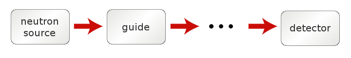
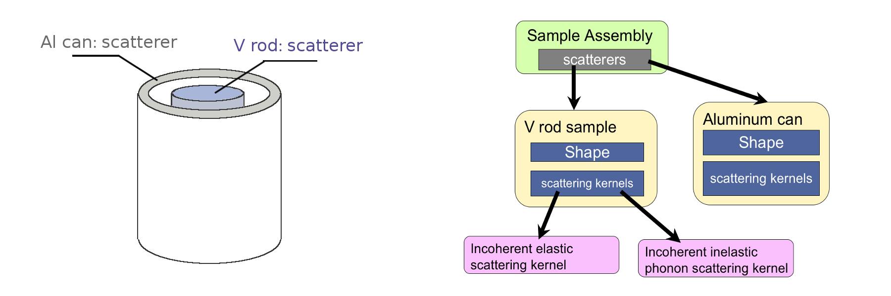
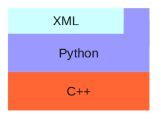
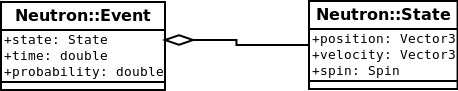
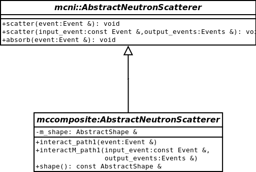
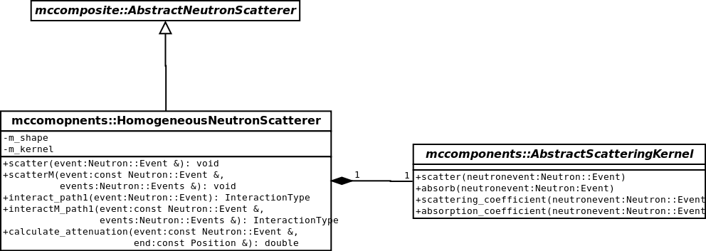
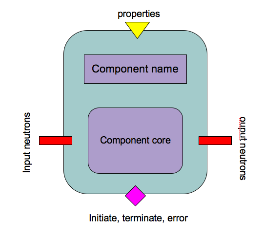
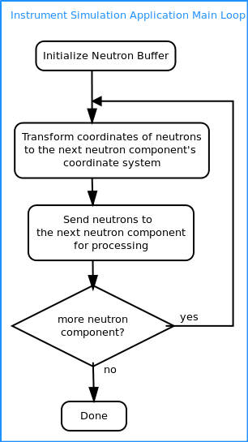

MCViNEMonte Carlo VIrtual Neutron Experiment |
Here we present the engineering philosophy employed in mcvine.
We can divide legacy MC neutron scattering code to two categories:
The latter approach is much more generic and more powerful. In pinciple, it can simulate arbitrary complex neutron scattering scenarios, but they are quite difficult to set up and run, and most instrument scientists cannot go that route. The first approach (linear chain) is less accurate but easier to use compared to MCNP and NISP. But still, only a few instrument scientists do that, and most users are not interested in MC simulations of neutron experiments mainly due to complexity of setting up such simulations.
MCViNE is engineered with the following goals in mind:
To reach these goals, we employed a few design principles. In spirit, these design principles can be sumarized as one guiding principle:
It means that we try to start by define what a program should accomplish, instead of how it should accomplish it. It means that we follow the following principles:
We also makes use of
to simply some implementations.
In the design, some well-established design patterns such as visitor pattern and composite pattern are employed.
In the following, we will explain the architecture and design of mcvine in more details.
To users, the high level structure of mcvine is somewhat similar to that of mcstas, IDEAS, vitess: a simulation consists of building an instrument from a linear chain of neutron components.
Each component is required to implement method “process” and optionally “processM”.
The “process” method takes one input: “neutrons”
def process(neutrons):
# process the input neutrons and generate output neutrons in-place
The “processM” method is the multiple-scattering version of method “process”.
As depicted in the figure, the output of the previous component becomes the input for the next component, and the neutrons never go backward in the component chain.
The design that distinguishes MCViNE from other linear-chain MC neutron code is its capability of describing sample in a fairly sophisticated and generic manner. The entities (sample, sample container, furnace etc) at the sample position are regarded as one composite entity which is termed “sample assembly”. A sample assembly consists of a list of neutron scatterers, each scatterer has its shape and a list of scattering kernels. Shown in the following figure is a typical sample assembly with its hierarchicial representation in mcvine on the right:
Arbitrary many number of scatterers can be represented well with mcvine, and arbitrary number of neutron scattering kernels can be inserted into a neutron scatterer. This decomposition scheme ensures maximum flexibility and can describe a variety of kinds of samples.
It is also worth mentioning that the shape of a scatterer can be an instance of any data object that inherits from the abstract Shape base class in mcvine, as long as some requirements are satisfied (more later). There are several built-in shapes, and you can use constructive solid geometry to create complex shapes from basic shapes, and you can extend mcvine to support more shape types.
Similarly in philosophy, there is an abstract base class for scattering kernels, and it is easy to extend mcvine to define scattering kernels of different kinds.
In mcvine, multiple-scattering is handled inherently. If a user requests to simulate multiple-scattering, the mcvine framework will allow neutrons to scatter multiple times until neutrons have negligible probability.
At this moment, you may want to start trying out mcvine by following some tutorials.
Up to now, you may find mcvine very flexible and powerful, but you will see the design of mcvine is actually even more flexible than what have been discussed up to this point. Please continue to read on to find out more details of mcvine design if you are a developer.
The general structure of mcvine is depicted in the following figure:
The main computation engines are implemented in c++ and then exported to python through c++/python bindings (implemented by using boost python). XML parsing (and rendering) are implemented in the python layer to allow users to use mcvine from command line with xml input files.
In the c++ layer, several different abstractions gradually decompose the neutron scattering problem into pieces so that in several layers mcvine can be extended and reused.
The object-oriented design of mcvine starts with the neutron event class “Neutron::Event”, which describes a neutron event by its state, time of flight, and probability. A neutron state, is decribed by its position, velocity, and spin.
Then we define an abstarct base class for all neutron scatterers, “mcni::AbstractNeutronScatterer”, which does not have any properties, but just defines its interface: methods “scatter”, “absorb”, and optionally “scatterM” for multiple scattering.
Next, we introduce “shape” into our world, A new abstract base class “mccomposite::AbstractNeutronScatterer” can be simply regarded as “mcni::AbstractNeutronScatterer” with one additional property, “shape”.
Also introduced at this level is “mccomposite::CompositeNeutronScatterer”, a class derived from “mccomposite::AbstractNeutronScatterer”. It allows users to construct one composite scatter from a bunch of scatterers, each of which only needs to be a solid instance of “mccomposite::AbstractNeutronScatterer”. Here, the “composite” design pattern is in use.
In a new namespace, “mccomopnents”, we further specialize our abstraction of neutron scatterer (still quite generic though), by introducing the notion of “HomogeneousScatterer”. For “HomogeneousScatterer”, the position where a neutron scattering happens does not matter, and the position-independent scattering function is described by “ScatteringKernel”.
The “mccomopnents::AbstractScatteringKernel” class is an abstract base class, which allows users/developers to use/implement various flavors of scattering kernels. One HomogeneousScatterer can also easily have more-than-one scattering kernels with the help of class “CompositeScatteringKernel”.
The gradual increase of specialization of the concept “neutron scatterer” is the core of the mcvine c++ library; it allows reuse and extension at all the levels of abstractions. For example, mcni::AbstractNeutronScatterer is very generic, and can be used to, for example, wrap components in mcstas/vitess packages, and could be even used to implement scatterers than consider wave-nature of the neutrons beam. In “mccomoposite” namespace, we introduced shape and defined its abstract interface. Also defined are basic shapes such as sphere and cylinder, and also opeorations such as union, difference, and dilation, to allow users to create sophisticated shapes out of simple ones using constructive solid geometery. Developers can extend mcvine to support more custom shape types.
In the python and xml layer we are trying to expose the hierarchical representation of the neutron scatterers in c++, and make it natural and easy to use. The diagrams presented here is then quite similar to the structure seen by users as presented in High level architecture from User’s point of view.
At the highest level, we are thinking of simulating neutrons going through neutron components in a neutron instrument. Below is a diagram for a neutron component:
An instrument consists of a list of components and a geometer registering positions of all components. A rough flow diagram of an instrument simulation looks like
The interface requirement of a neutron (python) component in mcvine is quite simple; all is needed is a “process” method that takes one argument “neutrons”. This allows integrating legacy components like those of mcstas ones, for example.
For sample assemblies, the composite pattern and the visitor pattern are in heavy use.
A sample assembly is represented in a hierarchical structure in which the types of nodes inside the structure are different among different sample assemblies. Visitor pattern is well suited for dealing with such structures to allow flexible additions of operations on them, such as view-rendering, user-interface-generation, and computation-engine-creation.
Here, the visitor of the fundamental importance is the visitor that creates computation engine from user specification of the sample assembly. This is done by
The design patterns we have chosen allows a flexible schema that is easily extensible to include future improvments on implementations, additions on scattering kernel types, shape types, etc.
{kind=link}
{kind=link}
{kind=link}
{kind=link}
{kind=link}
{kind=link}
{kind=link}
{kind=link}